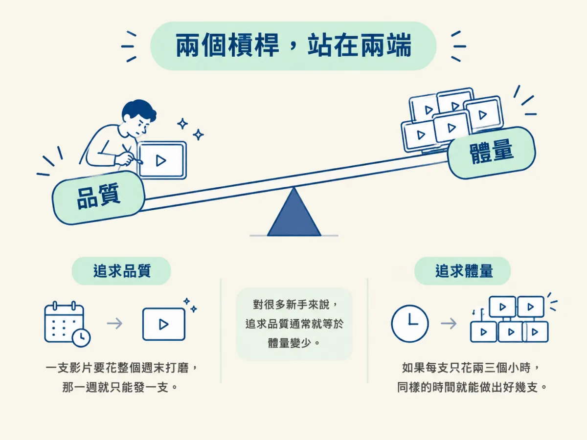
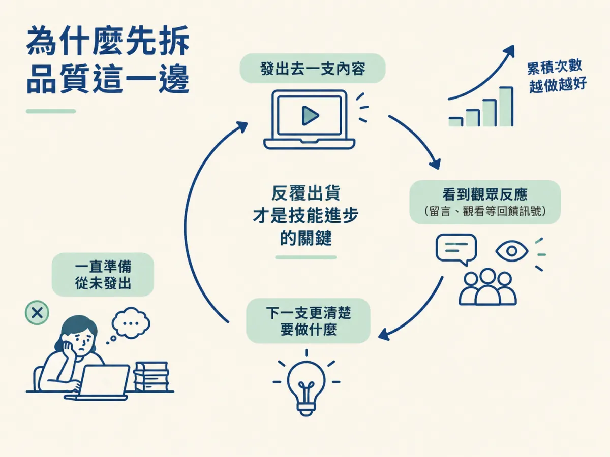

你能說出 Wk2 的兩個槓桿各指什麼，知道它們為什麼互相拉扯，並且能說明這一週為什麼要先拆掉「品質」那一邊。
假設你已經想好要拍一支關於 AI 工具的短片，題目也定了，腦中卻冒出另一個聲音：「先把畫面調亮一點、聲音再處理一下，準備好再發。」一週過去，檔案還躺在電腦裡，點子沒有變成任何一則貼文。
這種狀況在剛開始做內容的人身上非常普遍。它的根源往往不是缺點子，而是你把「做得多好」和「發了多少」綁在同一個念頭裡，結果兩邊都沒有得到好處。這一節就是整個 Wk2 的地圖：先認出課程裡的兩個槓桿，再看懂為什麼這一週要從品質這一端開始拆。
課程把內容創作拆成兩個槓桿。第一個是品質，指的是每一支內容做得多精緻。第二個是體量（volume），指的是你把內容發出去的數量。
這兩個槓桿站在光譜的兩端，一邊壓低，另一邊就翹起來。假設一支影片要花你一整個週末打磨，那一週就只能發一支；如果每支只花兩三個小時，同樣的時間就能做出好幾支。課程特別點出，對很多新手來說，追求品質通常就等於體量變少。

| 槓桿 | 指的是什麼 | 只盯這一端會怎樣 |
|---|---|---|
| 品質 | 單一支內容的完成度與精緻度 | 發文變慢，練習次數少，遲遲拿不到回饋 |
| 體量 | 發出去的內容數量 | 內容可能很粗糙，粗糙到連聲音都聽不清楚 |
表格裡兩邊都有代價，這正是課程想讓你看見的地方。接下來的幾個步驟會說明，品質其實比你想的要求低，而體量不能一直被犧牲。
課程說，新手最大的卡點是相信自己得先達到某種品質才能開始發。這個信念讓人把所有時間都花在準備，卻沒有任何一支內容真的發出去。所以這一週先處理品質，不是因為品質不重要，而是因為它最常被高估，也最容易擋住後面的所有動作。
體量則是另一件事。課程的看法是，任何一種技能，要練到好，關鍵都在反覆做、一直出貨。每發出去一支，你就會看到觀眾的反應，下一支自然會更清楚要做什麼。要讓體量能被推上去，你得先把品質那一端放鬆一點。

Wk2 的目標很具體：這一週結束前，你要發出一則自己想到的內容，並且至少想出三個內容點子。這個節點後面的步驟，會依序談品質為什麼被過度害怕、品質門檻怎麼隨追蹤數上升、品質到底是什麼，最後才落到今天就錄一支。
內容創作有品質與體量兩個槓桿，兩者常站在光譜的兩端互相拉扯。新手最容易卡在品質那一邊，所以這一週先拆掉「要先準備好才能發」的想法，讓體量有機會被推上去。Wk2 的具體目標是發出一則內容，並想出至少三個點子。